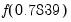
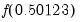
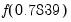
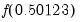

A subroutine is a collection of commands that allows you to perform a given task repeatedly, with minor variations, without actually duplicating the commands. You may also use subroutines from one program to perform the same task in other programs.
A subroutine begins with the keyword subroutine followed by the name of the routine and any arguments, and ends with the keyword
endsub. Any number of commands can appear in between. The simplest type of subroutine has the following form:
where the keyword subroutine is followed only by the name of the routine. This subroutine has no arguments so that it will behave identically every time it is used. It forms the square of the existing series
Z and stores it in the new series
X.
You may use the return command to force EViews to exit from the subroutine at any time. A common use of
return is to exit from the subroutine if an unanticipated error is detected. The following program exits the subroutine if Durbin’s

statistic (Greene, 2008, p. 646, or Davidson and MacKinnon, 1993, p. 360) for testing serial correlation with a lagged dependent variable cannot be computed:
To define a subroutine with arguments, you start with the subroutine keyword, followed by the subroutine name and (with no space) the arguments separated by commas, enclosed in parentheses. Each argument is specified by listing a type of EViews object, followed by the name of the argument. For example:
This subroutine generalizes the example subroutine Z_SQUARE. Calling the subroutine
POWER will fill the series given by the argument
V with the power
P of the series specified by the argument
Y. So if you set
V equal to
X,
Y equal to
Z, and
P equal to
2, you will get the equivalent of the subroutine
Z_SQUARE above. See the discussion below on how to call subroutines.
When creating subroutines with scalar or string arguments, you will define your arguments using the scalar or the
string types. Beyond that, you have a choice of whether you can to make the corresponding argument a (temporary) program variable or a (permanent) workfile object:
Once a subroutine is defined, you may execute the commands in the subroutine by using the call keyword.
call should be followed by the name of the subroutine, and a list of any argument values you wish to use, enclosed in parentheses and separated by commas (with no space after the subroutine name). If the subroutine takes arguments, the arguments must be provided in the same order as in the declaration statement. Here is an example program file that calls subroutines:
The call of the Z_SQUARE subroutine fills the series X with the value of
Z squared. Next, the call to the POWER subroutine creates the series
GDP2 which is
GDP squared. The last call to POWER creates the series
GDP3 as the cube of
GDP.
In “Subroutine with Arguments” we described how you can
define subroutines that use either program variables or objects for scalar or string arguments. However you define your subroutine, you may call the subroutine using either program variables or objects—you are not required to match the calling arguments with the subroutine definition. Suppose, for example, that you define your subroutine as
and use the same four call statements to execute the subroutine commands.
Execution of this program begins with the load statement; the subroutine definition is skipped and is executed only at the last line when it is “called.”
Subroutine definitions must not overlap—after the subroutine keyword, there should be an
endsub before the next
subroutine declaration. Subroutines may call each other, or even call themselves.
Alternatively, you may place frequently used subroutines in a separate program file and use an include statement to insert them at the beginning of your program. If, for example, you put the subroutine lines in the file “Powers.PRG”, then you may put the line:
at the top of any other program that needs to call Z_SQUARE or
POWER. You can use the subroutines in these programs as though they were built-in parts of the EViews programming language.
Global variables refer either to objects which exist in the workfile when the subroutine is called, and to objects that are created in the workfile by a subroutine. Global variables remain in the workfile when the subroutine finishes.
A local variable is one that is defined within the subroutine. Local variables are deleted from the workfile once a subroutine finishes. The program that calls the subroutine will not be able to use a local variable since the local variable disappears once the subroutine finishes and the original program continues.
By default, subroutines in EViews are global. Global subroutine may refer to any global object that exists in the workfile at the time the subroutine is called. Thus, if
Z is a series in the workfile, the subroutine may refer to and, if desired, alter the series
Z. Similarly, if
Y is a global matrix that has been created by another subroutine, the current subroutine may use the matrix
Y.
Z_SQUARE is a global subroutine which has access to the global series
Z. The new global series
X contains the square of the series
Z. Both
X and
Z remain in the workfile when
Z_SQUARE is finished.
In this example, there is a series Z in the original workfile and
Z is also an argument of the subroutine. Calling
SQSERIES with the argument set to
Y tells EViews to use the series passed-in via the argument Z instead of the global
Z series. On completion of the routine, the new series
Y2 will contain the square of the series
Y, not the square of the series
Z. Since keeping track of variables can become confusing when subroutine arguments take the same name as existing workfile objects, we encourage you to name subroutine arguments as clearly and distinctly as possible.
In this example, the subroutine WGTOLS must explicitly pass along arguments to the subroutine OLS so that it uses the correct series and equation objects.
You cannot use a subroutine to change the object type of a global variable. Suppose that we wish to declare new matrices X and
Y by using a subroutine
NEWXY. In this example, the declaration of matrix
X generates an error since
X exists and is a series, but the declaration of the matrix
Y works (assuming there is no Y in the workfile MYWORK, or that Y exists and is already a matrix):
If you include the word local in the definition of the subroutine, you create a local subroutine. Local subroutines are most useful when you wish to write a subroutine which creates many temporary objects that you do not want to keep.
This local subroutine takes the series Y as input and modifies the argument series
RES and argument scalar
SSR as output. Note that since Y, RES, and SSR are the only arguments of this local subroutine, the only global variables that may be used or modified are those associated with these arguments.The equation object
TEMP_EQ and the scalar SE are local to the subroutine and will vanish when the subroutine finishes.
Note that we first declare the series URES and scalar
USSR before calling the local subroutine. These objects are global since they are declared outside the local subroutine. Since we call the local subroutine by passing these global objects as arguments, the subroutine can use and update these global variables.
will fail because the hettest equation proc requires access to the original variables in the equation and the global variable Z, and these series are not available since they are not passed in as arguments to the subroutine.
You may, in a subroutine, use the local smpl statement to indicate that subsequent changes to the sample are temporary, and should be undone when exiting the subroutine. The command
You may use the global smpl statement to indicate that subsequent
smpl statements will result in permanent changes to the workfile sample. Thus, the commands:
Here, we create a workfile with 100 observations and an initial workfile sample of “1 100”, then call the subroutine FOO. Inside FOO, the first smpl statement changes the workfile sample to “2 100”. We then issue the
local smpl statement which backs up the existing sample and identifies subsequent sample changes as local. The subsequent change to the “10 100” sample is local so that when the subroutine exits, the sample is reset to “2 100”.
As before, first smpl statement changes the workfile sample to “2 100” and the
local smpl statement and following
smpl statement set the local sample to “10 100”. The
global smpl indicates that subsequent sample statements will once again be global so the next line permanently changes the workfile sample to “5 100”. Note that the last
local smpl and subsequent
smpl statement change the local sample only. When we exit the subroutine the sample will be set to the last global sample of “5 100”.


 depends upon the argument
depends upon the argument  . The argument
. The argument  is merely a place holder—it’s there to define the function and it does not really stand for anything. Then, if you want to evaluate the function at a particular numerical value, say 0.7839, you can write . If you want to evaluate the function at a different value, say 0.50123, you merely write . By defining the function, you save yourself from writing the full function expression every time you wish to evaluate it for a different value.
is merely a place holder—it’s there to define the function and it does not really stand for anything. Then, if you want to evaluate the function at a particular numerical value, say 0.7839, you can write . If you want to evaluate the function at a different value, say 0.50123, you merely write . By defining the function, you save yourself from writing the full function expression every time you wish to evaluate it for a different value.